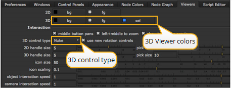

当您的脚本中有 3D 设置时，任何查看器窗口都可以在 2D 和 3D 显示模式之间切换。2D 模式显示渲染场景的结果，3D 模式显示场景中一个摄像机的透视。
|
|
| 3D 查看器。 |
如果脚本中没有相机节点，3D 查看器将使用默认视图 (请参见下图中的选项列表)。这些视图类似于您可以查看的不同摄影机，但它们不会显示为可在场景中操作的对象。
打开查看器并按 标签 或 V 要在 2D 和 3D 模式之间切换，或者从查看器窗口右上角的下拉菜单中选择所需的视图。
|
|
| 切换到 3D 查看器。 |
“内置” 视图为您提供 3D 场景的不同视角。您可以通过按右视图的键盘快捷方式在视图之间快速切换 ( X )，左视图 ( 移动 X )，顶视图 ( C )，底部 ( 移位 C )，前面 ( Z )，后退 ( 移动 Z ) 和三季度展望 ( V )。
• 多莉: 按 Alt 和 中年-鼠键 拖动。
• 潘: 按 Alt 和 左-鼠键 拖动。
• 倾斜: 按 Ctrl/Cmd 和 左-鼠键 拖动。
• 旋转: 按 Ctrl/Cmd 和 左-鼠键 拖动。
• 滚动: 按 Ctrl/Cmd Shift 和 左-鼠键 拖动。
• 浏览相机: 选择相机对象，按 H .
• 适合场景: 按 F 以适应观众的整个 3D 场景。
| 1。 | 打开 偏好 对话 ( Shift + S )，并选择 观众 标签。 |
|
 |
| 3D 查看器属性。 |
| 2. | 对 3D 进行所需的更改 Bg 和 Fg 颜色。 |
| 3. | 从 3D 控制类型 下拉菜单中，选择要使用的导航控制方案 ( Nuke 、玛雅、胡迪尼或光波)。 |
| 4. | 单击 保存 Prefs . |
注意: 3D 控制类型还会影响用于平移和缩放节点图和 2D 查看器的鼠标按钮指定。
| 1。 | 新闻 V 以确保您正在浏览 3D 透视视图，而不是一个正交视图。 |
| 2. | 从 3D 查看器窗口中，从右上角的下拉菜单中选择相机。 |

注意: 此选择不会更改用于渲染的相机。这将仅将相机更改为当前 3D 查看器的 “透视”。
当前数据流中的相机会自动出现在您可以选择的相机下拉菜单中。要选择未显示在菜单中的相机，请双击相机节点以打开其面板，并将其添加到菜单中。
您可以选择将 3D 视图锁定到选定的相机或灯光。您可以通过点击解锁和锁定模式之间切换 3D 视图 锁 按钮，或按 Ctrl/Cmd L .
• 解锁 : 在 3D 视图中不受限制地自由移动。3D 视图锁定按钮是灰色的。
• 锁定: 将您的移动锁定到您在 3D 视图锁定按钮右侧的下拉菜单中选择的相机或灯光。3D 视图锁定按钮为红色。
使用交互式 3D 相机视图模式，您可以根据浏览器中的移动更改相机或灯光值。您可以通过以下方式激活交互模式 Ctrl / Cmd 单击 3D 视图 锁 按钮。当交互模式打开时, 3D 视图 锁 按钮变成绿色。为了激活交互模式，您需要在右侧的下拉列表中选择相机或灯光节点 3D 视图 锁 按钮。
当交互式模式打开时，您可以使用加号 ( ) 和减号 ( - ) 用于更改选定相机或灯光的平移值的关键点。当交互模式关闭时，这些键会放大和缩小您的视图。
|
|